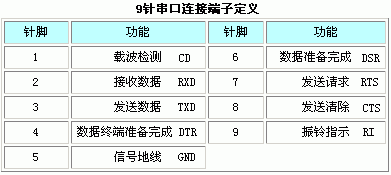
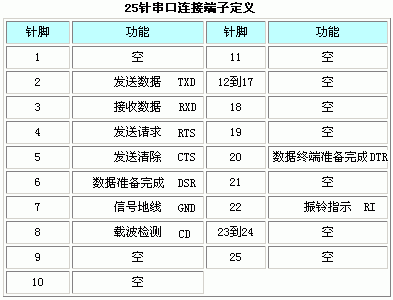
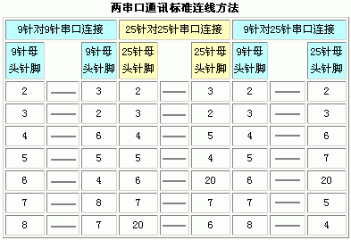
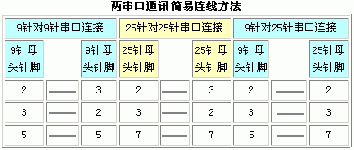

附录：RS232 端子定义与连线
一般在电脑或智能仪表上都配置有一个9针接头的 RS232 串行口，不过在有些老式智能仪表上配置的 RS232 接口是不常见的25针接头。
下面分别列出 RS232 接口9针、25针连接头的定义，以及两个通过 RS232 接口进行通讯的设备的标准与简易接线方法。标准接线方法采用七线制，简易接线方法采用三线制，若无必要，一般采用三线制连接即可。




 RS232 Tool 帮助文档
· 9.0 版
RS232 Tool 帮助文档
· 9.0 版
一般在电脑或智能仪表上都配置有一个9针接头的 RS232 串行口，不过在有些老式智能仪表上配置的 RS232 接口是不常见的25针接头。
下面分别列出 RS232 接口9针、25针连接头的定义，以及两个通过 RS232 接口进行通讯的设备的标准与简易接线方法。标准接线方法采用七线制，简易接线方法采用三线制，若无必要，一般采用三线制连接即可。



